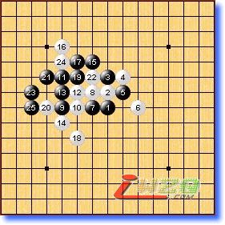
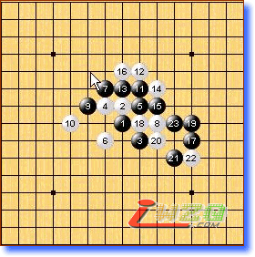
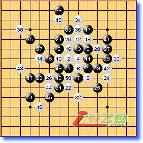
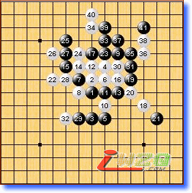
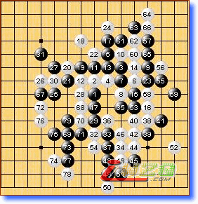
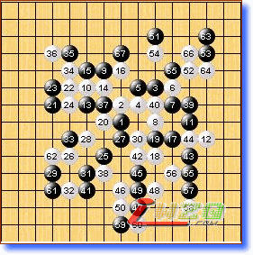

第一局 黑方 lio 白方 Kozhin 黑胜
本轮最早结束的一局，lio或许早就准备好了对付Kozhin的寒星。黑9的下法也必胜，并且比我数年前研究的9－12的胜法简洁的多。很受教的一局。或许这是Kozhin本届比赛的最后一盘寒星？

第二局 黑方 Taimla 白方 Oll 黑胜
这盘棋在两位爱沙尼亚棋手间进行，必败的白8并且18又是超弱防（关于次变化的最强防我博客有介绍）。爱沙尼亚棋手此次整体发挥欠佳，唯有Taimla还有点希望。

第三局 黑方 吴镝 白方 Okabe（冈部宽） 黑胜
吴镝估计是冈部宽的克星，本届比赛二胜Okabe。具体的讲解可以看中国连珠网关于此盘棋的即时解说。再次祝贺吴镝！

第四局 黑方 Karlsson 白方 Yamaguchi （山口） 黑胜
这盘山口30手一个冲四将好局断送。30如单防32，黑无胜。黑棋或许只能考虑通过先手迂回防守，但白棋左边很强似乎很难成立。Karlsson阻止了山口的连胜势头，下一轮吴镝VS山口将是非常好看的一局。

第五局 黑方 Savrasova 白方 Sushkov 黑胜
这盘为Sushkov遗憾，在读秒中出错。与0.5分擦肩而过。看的出两个人的确不想和棋，即便处在一种随时可和的状态。

第六局 黑方 Chingin 白方 Purk 和棋
这盘Chingin到黑11采用的变化与上盘赢Karlsson一样，13改变策略是正确的。Purk应该也对Chingin的黑5做过准备，所以这盘基本上没什么大的风浪。
